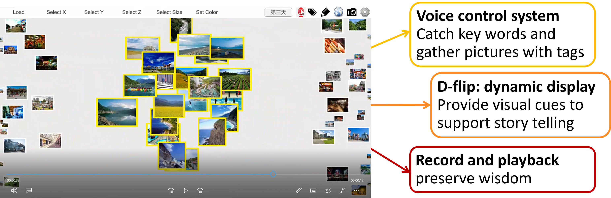
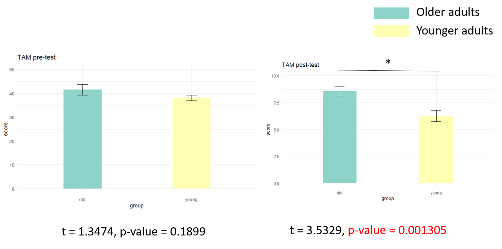
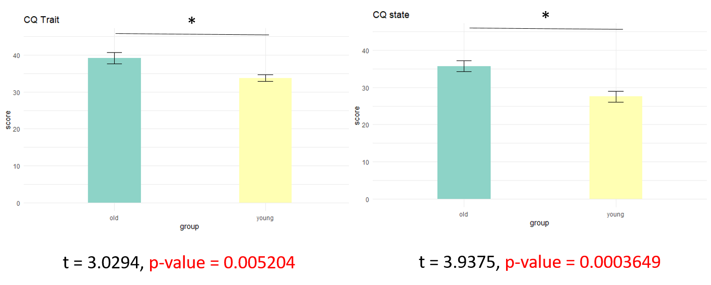
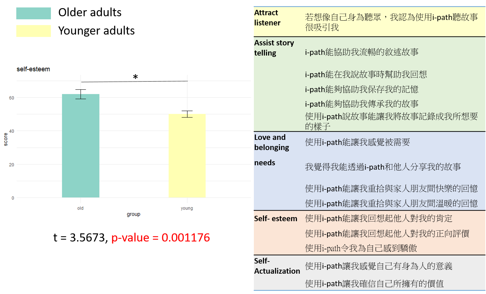
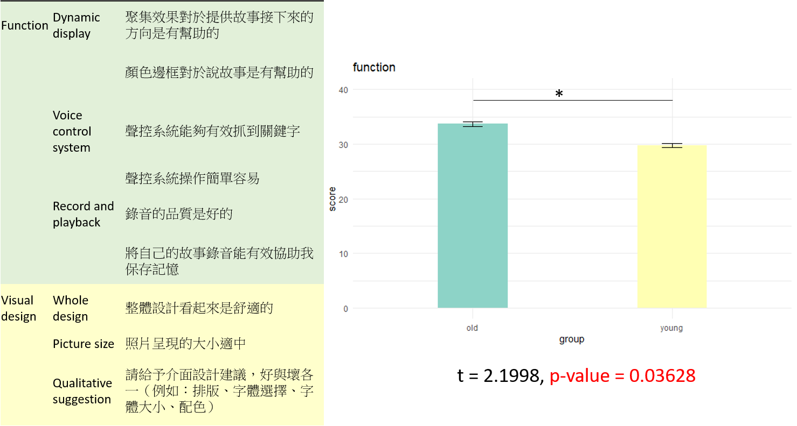
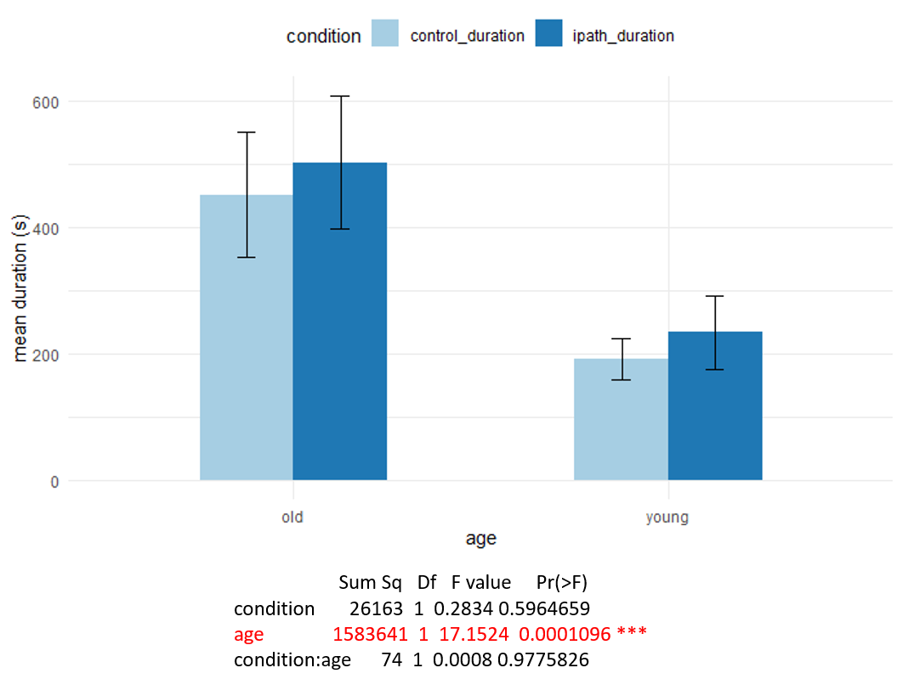

A digital biography system for assisting older adults with preserving their memory and improving mental health.
Research Background
- Through the retrospective view on his or her life, the narrator can acquire resilience, wisdom, well-aging, and well-being (Pecorini & Duplaa, 2017 ).
- However, though the older adults are willing to share, there are often no listeners.
- Digital storytelling is good for the health (positive emotion and cognitive training) and for inter-generational interaction (attract listeners).
- Digital storytelling applies moving visual images, text, graphics, and audio components that produce a multimedia product for new or ‘remixed’ versions of stories (Hoechsmann et al, 2015).
Goal of the study
- A digital biography system for assisting older adults with preserving their memory and improving mental health.
Methods
a. Interview (20 older adults)
- Need customized interface
- Prefer AI as a helper for digitalizing autobiography
- Want to share and listen to stories
- Want to preserve memories mainly by photos
b. Define Users' needs
- Attract listeners
- Help users tell their stories by using active photos
- Preserve knowledge and skills
c. Prototype

d. Usability and acceptance test
-
Participants:
- 20 younger adults
- 20 older adults
-
Within subjuct design:
- Each participant would go through both treatment(i-path) and control condition
-
Measures:
- Questionnaires
- Ten Item Personality Measure (TIPI)
- Montreal Cognitive Assessment (MoCA )
- Technology Acceptance Model (TAM)
- State / Trait curiosity
- UX survey
- Interview
- Questionnaires
-
Stimuli:
- 9*2 personal related pictures in each story
- 45 unrelated pictures in each story
Results
(a) Technology acceptance
-
Pre-test focus on general technology(left) and post-test focus on i-path(right)
-
Pre-test shows that there is no difference in the acceptance of general technology between older and young adults
-
Post-test shows that older adults have a hight acceptance on i-path
(b) Curiosity
-
Pre-test(green) / post test(yellow)
-
Trait curiosity(left) / state curiosity(right)
-
Older adults self report both higher trait curiosity and state curiosity
(c) Self-developed questionniares and behavioral data
-
(1) Aims (attract listeners / assist storytelling / preserve wisdom)
- Older adults have a more positive feelings toward i-path comparing with young adults
- The questionnaire is divided into 5 constructs: Attract listener, Assist story telling, Love and belonging needs, Self- esteem, Self-Actualization (Love and belonging needs, Self- esteem, and Self-Actualization are for measuring wisdom preservation)
-
(2) functional aims (dynamic display / record & playback / voice control)
 - Young adults have a higher rating comparing with older adults -
(3) behavioral data (time of using)
- The time each users interacted with i-path was recored (maximun 30 minutes)
- In average, olders adults spent more time interacting with i-path, however, there is no significant differnece in the interaction time between i-path and control group, indicating that the three main functions of i-path do not increase the time of usage of older adults
Conclusion
- Older adults self-reported a higher acceptance and curiosity over the biography system.
- However, the self-reported positive attitudes did not reflect on the actual behavior. The elderly did not spend significantly more time in the i-path condition than in the control condition.
References
- Pecorini, B. C., & Duplaa, E. (2017). Narrative Gerontology and Digital Storytelling: What Benefits for Elders. MOJ Public Health, 6(6), 00192.
- Hoechsmann M, De Waard H (2015). Define digital literacy policy and practice in the landscape of Canadian education. Media Smarts, Canada, 1-75.
- Vi, C. T., Takashima, K., Yokoyama, H., Liu, G., Itoh, Y., Subramanian, S., & Kitamura, Y. (2013). D-flip: Dynamic and flexible interactive photoshow. The International Conference on Advances in Computer Entertainment Technology, Springer, Cham.